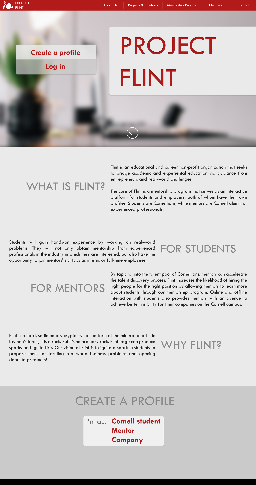
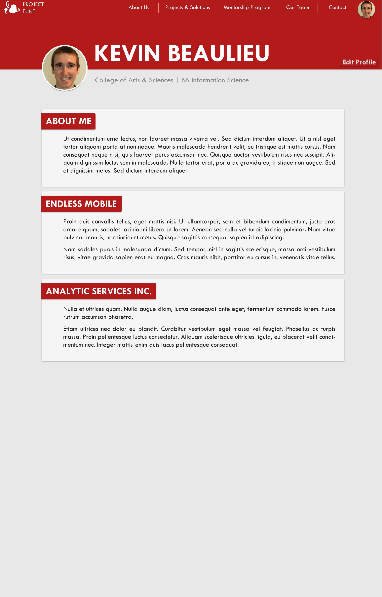
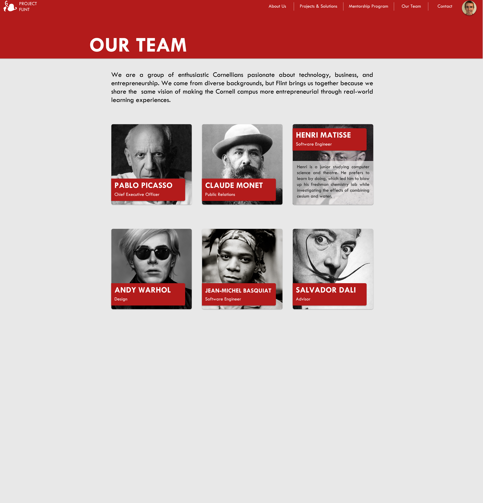

Flint seeks to bridge academic and experiential education by connecting students with established entrepreneurs who will provide them with both guidance and real-world challenges. At its core, Flint is a mentorship program between Cornellian students and experienced professionals and/or Cornell alumni. Flint is unique and highly accessible in that it provides a convenient, interactive online platform upon which students and employers can communicate with each other.
As CTO of Flint, I lead the software development team, which is responsible for the implementation of Flint's website. The website is the main portal through which students and mentors find and connect with one another. In addition to managing the team, I focus primarily on design and front-end programming for the website.
The Design Process
Below are some of my working designs for Flint's website. The color red is used throughout the site because it represents Cornell University. As Flint is currently open only to Cornell students, I chose a color that reflect that community. A light shade of gray was chosen for the background because it is easier on the eyes than a stark white without distracting from the content.
In designing the overall style and mood of Flint's website, I balanced the expectations of our two main user bases: college students and alumni/entrepreneurs. College students typically prefer "modern" design elements such as flatness, bold colors, and subtle animations. Flint aims to help students enter the professional business world, so I preserved a decidedly grayscale design, with only key elements highlighted in Cornell red. Depth and distinct layers establish context, making it clear to the user how elements relate to each other.

The center of attention within students' profiles are a list of cards, each representing a past job, experience, or accomplishment. I plan to update the design shown below to better distinguish between differeent types of cards, such as the About Me card versus that of a summer internship. In the future, profiles will also show a student's mentors and friends so others can get insight into the student's professional and social networks.

